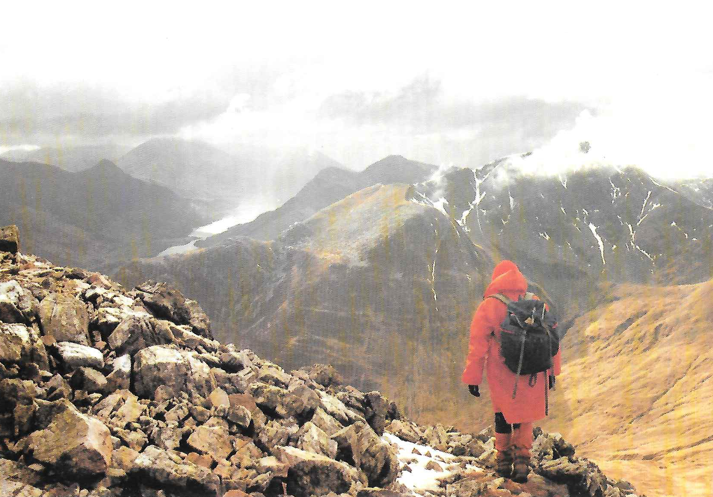

A Three Second Route
by Marian Birkett
A summer evening’s gritstone climbing what more could you ask for? Hilary and I walked up to the “Unconquerable” area of Stanage to meet various friends. Pippa and Lisa were just starting Right Unconquerable HVS . I had made the mistake of climbing Little Unconquerable once before, a VS overhanging gritstone crack, so that was out. What was left? Well, that was it - Left Unconquerable , E1 5b a route I’d been eyeing up for some time.
The short crack which it shares with Right Unconquerable leads to a small ledge, then the crack continues steeply to some overlaps. The next bit, a sort of awkward lay away, is the crux after that, big holds up the final steep section lead to the top.
I unpacked my sack. I’d just bought some new rock boots, B3s, only £25 I can’t resist a bargain! but I hadn’t tried them out yet. Lisa was amazed that I was going to wear them for the first time on this particular climb. I reasoned that they had to be better than my Crag Rats and that I needed all the help I could get. I’d been away and hadn’t climbed on gritstone for some weeks.
I started badly. I took at least ten goes to climb the first short supposedly straightforward crack. The boots were incredibly uncomfortable: why do they always feel alright when walking round the shop? I started up the steep crack, putting lots of runners in I’d got far too much gear as usual, so I might as well get rid of it. By the time I’d reached the overlap my arms were screaming I spent a while getting Friends in the horizontal crack and then my ethical stance lowered somewhat.
“Can you hold me on the rope, Hilary?”
Oh, the relief of being able to let go with my hands! A good while later, I’d rehearsed in my mind the moves I needed to make and psyched myself up ready to go.
“OK Hilary, I’ll have another go!”
First get the feet in the longitudinal crack another small ledge a bit higher, lay away with the left hand , reach up with the right not much of a hold that! Now, keep going another couple of moves and I’d reached the big jug with my left hand marvellous, I’d done it. Or had I? I just needed to get my left foot up on that hold and it was still some inches away. My hands wouldn’t work: I was staring at my fingers willing them to stay there but I saw them slowly uncurling. Whoosh! Suddenly I was twenty feet lower down, hanging upside down, staring stupidly at Hilary. She had been sitting down and had been lifted off her feet as I fell. I felt surprisingly little jolting it was the first time I’d fallen when leading unless you count a fall from about eight feet up a route when my landing was cushioned by my second’s head . I swung the right way up, pulled myself back to the steep crack, clipped into a runner and hung there to take the weight off Hilary and to have a rest. So near and yet …
The others were hoping I’d give up. The midges were biting and the pubs were open. No chance! I knew I could do it. I’d done the hard move. I’d just have to do it quicker so I didn’t run out of strength next time.
By this time Pippa had completed Right Unconquerable and so had Lisa. They were getting ready to go. Pippa, thinking that Hilary would like a rest after belaying me for about an hour, took over from her. I struggled back up the crack to the overlap. I was trying to conserve energy as my hope of a clean ascent was now long gone and I rested often. At the overlap I rested a good while on a runner, long enough to thoroughly bore Pippa, who now handed over to Lisa my third second on this one route.
Realising it was getting dark and that the pubs would soon be shut, I gathered my energies for a final assault. Where were those hand holds? There’s the jug! Now, fingers, STAY WHERE YOU’RE PUT this time. Will my foot reach that hold? Yes! Made it!
I collapsed, puffing and panting, above the crux. Encouraging noises floated up from below. Just the last bit now. Let’s get a runner in don’t want to do that again. Suddenly, there I was at the top, a slight breeze trying to blow away the midges. Up came Hilary and Lisa, congratulating me. My first E1 on grit. Maybe I’ll do one properly some day.

Figure 1: Autumn at Stanage

Figure 2: On The Mamore Ridge